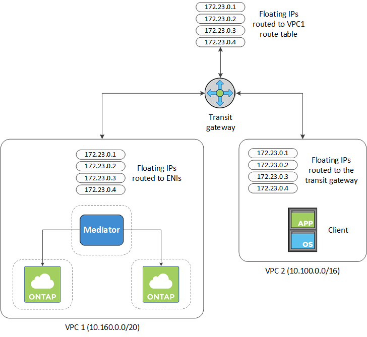
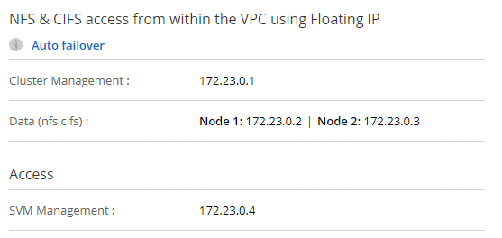
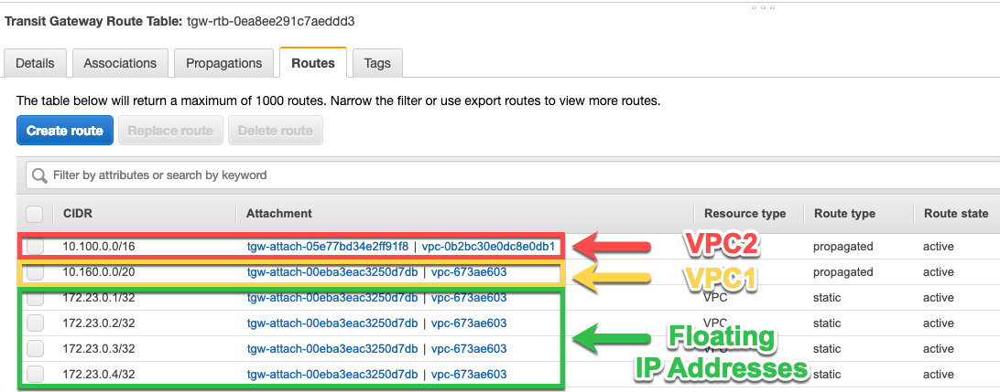
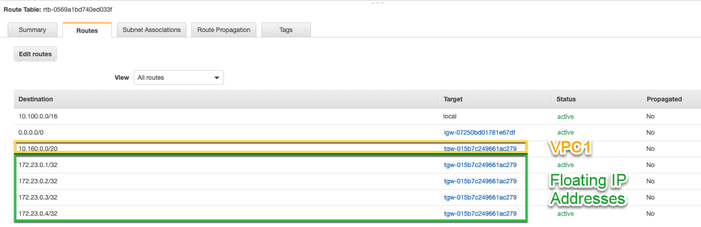
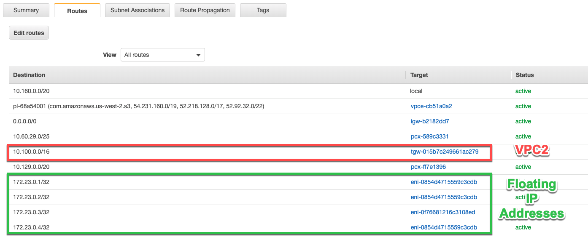
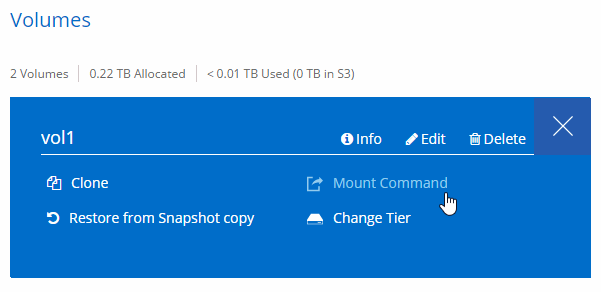

ドキュメントの変更をリクエスト
ドキュメントの変更をリクエスト GitHub で編集
GitHub で編集 寄稿者向けガイド
寄稿者向けガイドでの HA ペアの AWS 転送ゲートウェイのセットアップ 複数の AZ
へのアクセスを有効にするために、 AWS 転送ゲートウェイを設定します HA ペアの 1 つ "フローティング IP アドレス" HA ペアが存在する VPC の外部から
Cloud Volumes ONTAP HA 構成が複数の AWS アベイラビリティゾーンに分散されている場合は、 VPC 内からの NAS データアクセス用にフローティング IP アドレスが必要です。これらのフローティング IP アドレスは、障害の発生時にノード間で移行できますが、 VPC の外部からネイティブにアクセスすることはできません。VPC の外部からのデータアクセスはプライベート IP アドレスで提供されますが、自動フェイルオーバーは提供されません。
クラスタ管理インターフェイスとオプションの SVM 管理 LIF にもフローティング IP アドレスが必要です。
AWS 転送ゲートウェイを設定すると、 HA ペアが配置された VPC の外部からフローティング IP アドレスにアクセスできるようになります。つまり、 VPC の外部にある NAS クライアントとネットアップの管理ツールからフローティング IP にアクセスできます。
以下に、トランジットゲートウェイによって接続された 2 つの VPC の例を示します。HA システムは 1 つの VPC に存在し、クライアントはもう一方の VPC に存在します。その後、フローティング IP アドレスを使用して NAS ボリュームをクライアントにマウントできます。

以下に、同様の構成を設定する手順を示します。
-
VPC とトランジットゲートウェイルートテーブルを関連付ける。
-
*VPC サービスで、 *Transit Gateway Route Tables * をクリックします。
-
ルートテーブルを選択します。
-
[*Associations] をクリックし、 [Create associations] を選択します。
-
関連付ける添付ファイル（ VPC ）を選択し、 * 関連付けの作成 * をクリックします。
-
-
HA ペアのフローティング IP アドレスを指定して、転送ゲートウェイのルートテーブルにルートを作成します。
フローティング IP アドレスは、 Cloud Manager の Working Environment Information ページで確認できます。次に例を示します。

次の図は、中継ゲートウェイのルートテーブルを示しています。このルートには、 2 つの VPC の CIDR ブロックへのルートと、 Cloud Volumes ONTAP で使用される 4 つのフローティング IP アドレスが含まれます。

-
フローティング IP アドレスにアクセスする必要がある VPC のルーティングテーブルを変更します。
-
フローティング IP アドレスにルートエントリを追加します。
-
HA ペアが存在する VPC の CIDR ブロックにルートエントリを追加します。
次の図は、 VPC 1 へのルートとフローティング IP アドレスを含む VPC 2 のルートテーブルを示しています。

-
-
フローティング IP アドレスへのアクセスが必要な VPC へのルートを追加して、 HA ペアの VPC のルーティングテーブルを変更します。
VPC 間のルーティングが完了するため、この手順は重要です。
次の例は、 VPC 1 のルートテーブルを示しています。フローティング IP アドレスへのルートと、クライアントが配置されている VPC 2 へのルートが含まれます。フローティング IP は、 HA ペアの導入時に Cloud Manager によってルートテーブルに自動的に追加されます。

-
フローティング IP アドレスを使用して、ボリュームをクライアントにマウントします。
Cloud Manager で正しい IP アドレスを確認するには、ボリュームを選択して * Mount command * をクリックします。

-
NFS ボリュームをマウントする場合は、クライアント VPC のサブネットと一致するようにエクスポートポリシーを設定します。